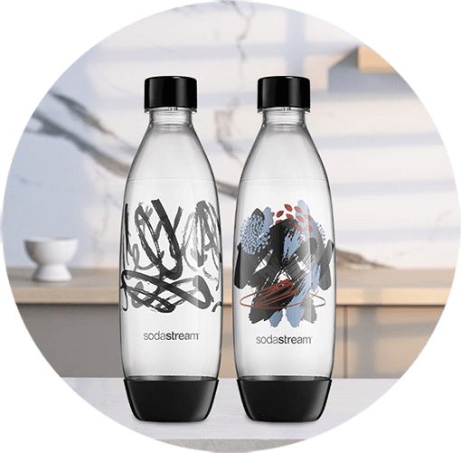

Butelka
FUSE ART SPARKLING
MYSTERY 1L
CZARNE, DWUPAK
ZMIEŃ SWOJĄ WODĘ
W GAZOWANĄ JUŻ
W KILKA SEKUND!
Wybierz butelki Fuse Art Sparkling Mystery. W prosty i stylowy sposób dbaj o środowisko, pijąc wodę. Wielorazowe butelki Fuse Art Sparkling Mystery wykonane są z trwałego i odpornego na uszkodzenia tritanu. Dzięki temu są niezwykle wytrzymałe oraz mogą być myte w zmywarce. Dodatkowo łączą one funkcjonalność z przepięknym wzornictwem. Dzięki starannie dopracowanym, wyjątkowym nadrukom możesz ich używać zarówno na co dzień, jak i podczas kolacji z przyjaciółmi lub rodziną.
SZTUKA TWORZENIA BĄBELKÓW

PRZEPIĘKNE WZORNICTWO
Na wielorazowych butelkach Fuse Art Sparkling Mystery znajdziesz
intrygujące nadruki w stylu nowoczesnym. Wzory wyglądają niezwykle
oryginalnie i z pewnością przyciągną uwagę Twoich gości.
ROZPOCZNIJ EKOREWOLUCJĘ
W SWOIM DOMU
Wyeliminuj nawet 1769* jednorazowych butelek plastikowych.
Pomóż także w eliminacji
do 78 miliardów
jednorazowych butelek plastikowych do 2025 roku.
BĄBELKOWANIE Z SODASTREAM JEST PROSTE
1
Napełnij butelkę zimną wodą.
2
Umieść butelkę w ekspresie.
3
Naciśnij przycisk lub
pociągnij za dźwignię. Gotowe!
Butelki Fuse Art Sparkling Mystery pasują do ekspresów SodaStream Art, Terra, DUO, Spirit i Source.
JEDNA SODASTREAM – WIELE MOŻLIWOŚCI
Poznaj naszą szeroką gamę smakowitych syropów SodaStream. Z ich pomocą stwórz w wielorazowych butelkach SodaStream orzeźwiające, kolorowe napoje. Dostępnych jest wiele klasycznych i owocowych smaków, a wśród nich również niskokaloryczne syropy bez cukru.
#PushForBetter